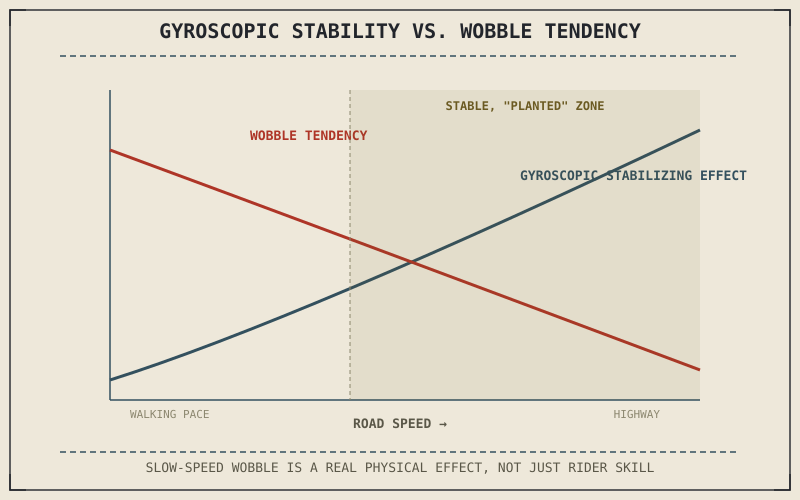

A motorcycle crawling through a parking lot at walking pace feels distinctly wobbly and requires constant small corrections to stay upright; the same motorcycle cruising at highway speed feels planted and stable, almost effortlessly balanced. Chapter 4.6 already connected this to spin speed in general terms. Chapter 8.9's precession-rate relationship now lets this chapter explain exactly why the transition between wobbly and planted happens the way it does, not just that it happens.
Chapter 8.9 closed by promising this chapter would apply gyroscopic effects directly to speed-dependent stability. This chapter is that application.
Why the Same Disturbance Produces a Bigger Swing at Low Speed
Chapter 8.9 established that precession rate — how fast a spinning wheel's axle actually sweeps in response to an applied torque — equals that torque divided by the wheel's angular momentum. A bump, a small rider input, or any other disturbance applies roughly the same torque to the front wheel's axle regardless of road speed, but at low speed the wheel's angular momentum is small, so that same torque divided by a small angular momentum produces a fast, large precession sweep — the wobble a rider feels in slow maneuvering. At highway speed, the wheel's angular momentum is large, so the identical disturbance torque divided by that larger angular momentum produces a much slower, smaller sweep, giving trail's self-centering geometry from Chapter 4.4 time to damp it out before it becomes noticeable at all.
Why This Isn't Purely a Skill Problem
This is precisely why new riders find slow-speed maneuvering, like a tight U-turn in a parking lot, considerably harder to balance than riding at moderate speed, and why that difficulty isn't really about skill in the way it might feel — the precession-rate relationship from Chapter 8.9 means the same size disturbance genuinely produces a faster, larger response at low speed, which has to be corrected for more quickly and more often than the identical disturbance would demand at speed. It's a real physical difference in how quickly the bike's own geometry can react, not purely a confidence or technique problem.
The same bump produces a slow, small precession sweep at highway speed and a fast, large one at walking pace — not because the disturbance changes, but because the wheel's angular momentum, and therefore the precession rate from Chapter 8.9, changes with it.

A graph showing gyroscopic stabilizing effect rising with road speed, plotted alongside a wobble-tendency curve that falls as speed increases, crossing over into a stable, planted-feeling zone at typical cruising speed.
A Common Misconception, Cleared Up Early
It's tempting to conclude from this chapter that more gyroscopic effect is simply always better, and that a motorcycle should therefore use the heaviest possible wheels to maximize stability at speed. Chapter 6.8 already established that heavier wheels increase unsprung mass, directly degrading the suspension's ability to track the road, and stronger gyroscopic resistance also makes a motorcycle correspondingly harder to steer quickly, since precession from Chapter 8.9 resists rapid direction changes the same way it resists unwanted disturbances. Wheel mass is, like nearly everything else in this book, a genuine trade-off between stability and agility, not a variable to simply maximize.
Where This Leads
Gyroscopic effects and geometry both contribute to stability, but under certain conditions a motorcycle's own dynamics can work against that stability instead, producing oscillations rather than damping them. Chapter 8.11 turns to that instability directly, covering wobble and weave.
Key Concepts to Remember
- The same disturbance torque produces a faster, larger precession sweep at low speed and a slower, smaller one at high speed, since precession rate is torque divided by angular momentum.
- Low-speed wobble is a genuine consequence of that faster precession rate, not purely a rider skill or confidence issue.
- Heavier wheels increase gyroscopic stability but also increase unsprung mass and steering resistance, making wheel mass a genuine stability-versus-agility trade-off.
Cross-References
| ← Ch. 8.9 | Established angular momentum and the precession-rate relationship; this chapter applies both to explain exactly why low speed feels less stable. |
| ← Ch. 4.6 | Connected spin speed to stability in general terms; this chapter explains the specific mechanism, precession rate, behind that connection. |
| ← Ch. 6.8 | Established unsprung mass costs from heavier wheels; this chapter shows those same heavier wheels trading suspension performance for gyroscopic stability. |
| → Ch. 8.11 | Covers instability — wobble and weave — where a motorcycle's own dynamics work against stability rather than supporting it. |